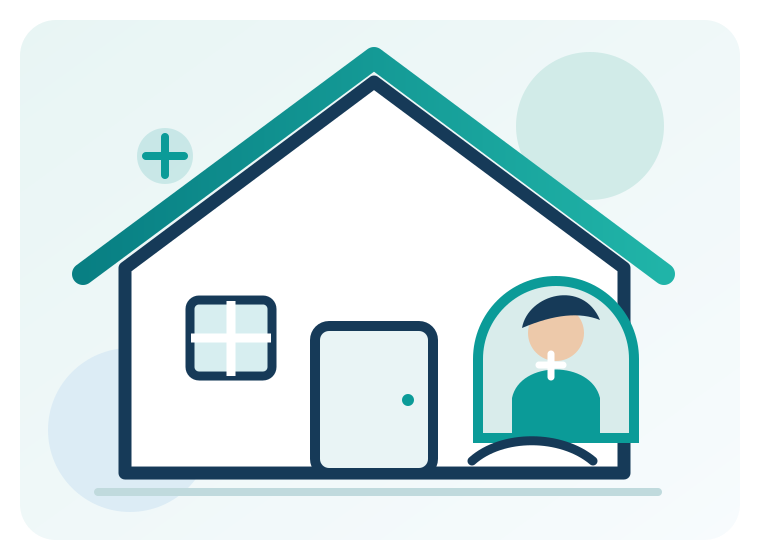

Thoughtful care,
right at home.
JNS Home Care and Nursing Services helps individuals and families arrange home nursing and day-to-day patient support with dignity, respect and clear communication.

Home care support for different needs
Explore six service areas covering the 24 services listed by JNS. Availability and the appropriate care arrangement are confirmed after discussion.
Skilled Home Nursing Care
Clinical nursing support arranged around prescribed care needs.
View service detailsWound & Recovery Care
Support during wound-care routines and planned recovery at home.
View service detailsElderly & Personal Care
Respectful help with daily routines, personal care and companionship.
View service detailsBedridden & Mobility Care
Practical assistance for people with limited mobility.
View service detailsPalliative & Special Patient Care
Comfort-focused support coordinated with the treating team.
View service detailsHome Nursing & Attender Services
Scheduled nursing and attendant arrangements at home.
View service detailsCare begins with listening.
Every home and every care requirement is different. We begin by understanding the requested support, preferred timings and the instructions already provided by the treating healthcare team.
- ✓Discuss the patient’s day-to-day support needs with the family.
- ✓Clarify the service scope, schedule and staff requirements.
- ✓Confirm availability and agreed arrangements before service begins.
Looking for home care support?
Talk to our team about the service and schedule you are looking for.